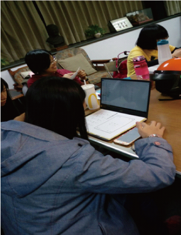
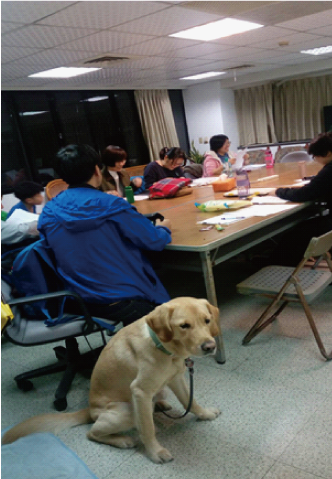

Music word
音樂點字推廣
緣起：辜進心老師畢業於文藻外語大學日文系，從小因為眼癌而全盲，2012年帶著導盲犬瑞斯到日本，2013年進入筑波大學附屬特別
支援教育視覺障礙學校音樂科研讀。
視障朋友因為視力上的限制，所以學習音樂的過程中，須要靠許多人錄音，指導，然後自己在私下慢慢靠著耳朵還有記憶一點一
滴的把樂譜記起來，慢慢完成曲子，非常的辛苦。然而，在日本卻有一群非常熱心的志工幫忙視障朋友，將一般人閱讀的五線譜
轉譯成視障者可以閱讀的點字樂譜。
回國之後，辜進心老師希望在台灣推廣盲人點字樂譜，期望藉此讓視障者靠自己的能力完成演奏，突破眼睛無法閱讀樂譜或忘記
旋律節奏的困擾。
貳目標：
1.希望透過推廣音樂點字，讓視障者可以改善只能依賴聽覺學習音樂的限制。
2.藉此聚會課程，讓社會大眾更認識音樂點字，進而加以推廣應用於教學工具上。
主辦單位：高雄市正信佛教青年會觀音線協談中心
上課時間：週三晚上06:30~08:00。
上課地點：高雄市苓雅區中正二路58號9樓
(元大銀行樓上)
1.希望透過推廣音樂點字，讓視障者可以改善只能依賴聽覺學習音樂的限制。
2.藉此聚會課程，讓社會大眾更認識音樂點字，進而加以推廣應用於教學工具上。
主辦單位：高雄市正信佛教青年會觀音線協談中心
上課時間：週三晚上06:30~08:00。
上課地點：高雄市苓雅區中正二路58號9樓
(元大銀行樓上)
參加對象：
對音樂點字轉譯、推廣有興趣之民眾。
課程內容：
1.認識視障者的生活與限制
2.點字的意義與概念認識
3.五線譜基本認識與介紹
4.點字樂譜學習
5.點字轉譯說明-電腦文書編輯
報名方式：
高雄觀音線協談中心
週一至週六下午2：30~5：30
行政電話：07-2248948
行動電話：0905-369-855(辜進心)
電子信箱：sianku1205@gmail.com


對音樂點字轉譯、推廣有興趣之民眾。
課程內容：
1.認識視障者的生活與限制
2.點字的意義與概念認識
3.五線譜基本認識與介紹
4.點字樂譜學習
5.點字轉譯說明-電腦文書編輯
報名方式：
高雄觀音線協談中心
週一至週六下午2：30~5：30
行政電話：07-2248948
行動電話：0905-369-855(辜進心)
電子信箱：sianku1205@gmail.com
協談專線： 224-7181 行政專線: 224-8948
電 郵: kis.chba@gmail.com
服務時間： 每週一至週六 下午2：30 - 5：30 睌上6：30 - 9：30
帳號 : 元大銀行806-苓雅分行00108100175014
歡迎贊助 : 戶名:高雄市正信佛教青年會
電 郵: kis.chba@gmail.com
服務時間： 每週一至週六 下午2：30 - 5：30 睌上6：30 - 9：30
帳號 : 元大銀行806-苓雅分行00108100175014
歡迎贊助 : 戶名:高雄市正信佛教青年會